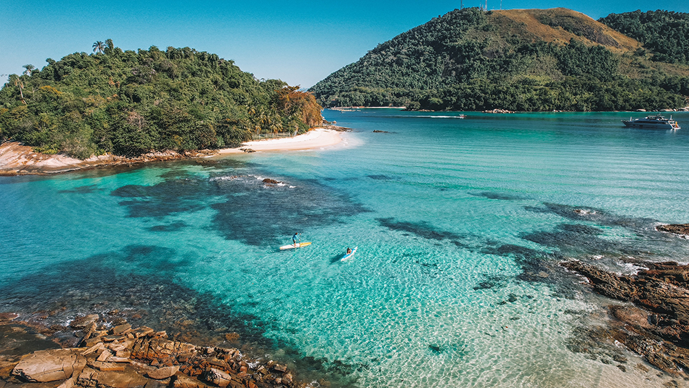
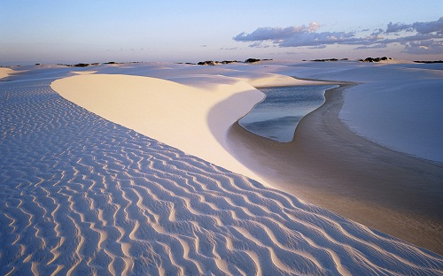

Mapa de destino
Veja os pontos principais do seu destino
Dicas de locais

Ilha Grande - Rio de Janeiro
Ilha Grande, um paraíso sem carros, preserva um ecossistema intocado, onde montanhas cobertas de selva descem até praias perfeitas em forma de crescente, com águas esmeralda deslumbrantes.

Jericoacoara
As dunas isoladas de Jericoacoara emergem da costa norte do Brasil, criando um paraíso boêmio onde ruas de areia levam a praias perfeitas para windsurf e a pôr do sol coloridos. Antes uma simples vila de pescadores, “Jeri” virou um destino estiloso, mas ainda mantém aquele charme descontraído.

Floresta Amazônica
A incrível biodiversidade da Floresta Amazônica forma a maior floresta tropical do planeta, onde o rio Amazonas corre por selvas cheias de vida. Este vasto ecossistema se estende por mais de 5,5 milhões de quilômetros quadrados, e 60% dele fica dentro do Brasil.

Parque Nacional de Lençóis Maranhenses
A paisagem impressionante do Parque Nacional de Lençóis Maranhenses cria um dos contrastes mais inesperados da natureza, onde dunas de areia branca ondulantes abrigam milhares de lagoas de água doce cristalina.